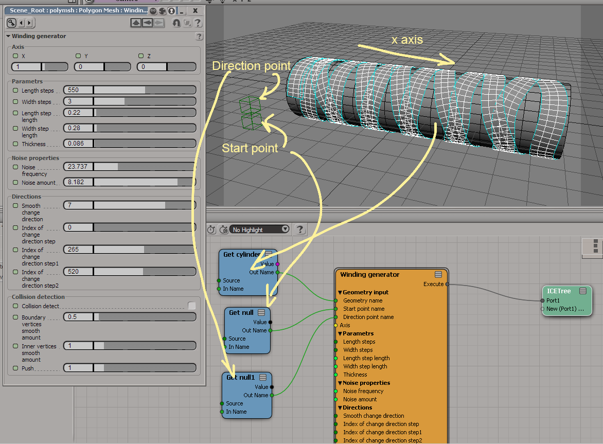

Winding generator
Last update: 08.03.2017
Description: Two ICE-compounds for creating polygon strips along surfaces. The first compound creates a strip which automatically winding around the cylindrical shape. The second compound creates the strip along input curve.
Download: Winding generator.xsicompound, Wrist Along Curve.xsicompound
How to use: Winding generator:
Wrist Along Curve:
Videos: